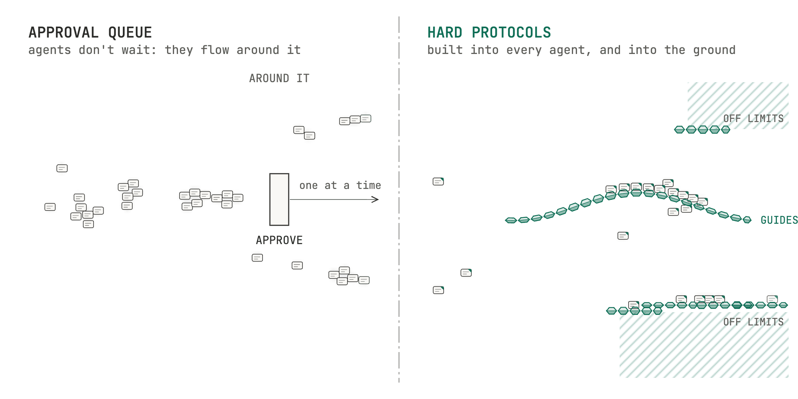
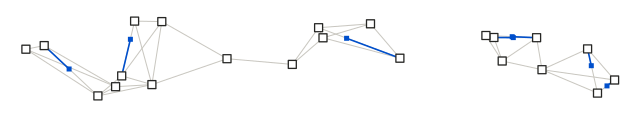
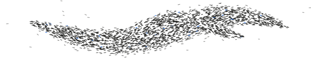
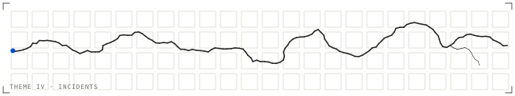

Some tensions are handled in the moment; others are built into structure.→Which rules should be hard, and which can stay soft?
Good protocols produce non-events, and nobody counts what didn't happen.→What can incident reports show us about everything that usually goes right?
Protocols show up when tempo changes: Slack in the office, Boom's R&D against its supply chain.→What shows up when agents speed everything up?
Standards spread through incentives and narrow scope, then lock in.→What do our systems emit, and how do we keep rules open to change?
Working with agents is management; the scarce work is gathering context.→Who gathers that context where you work, and could it be you?
What's different now
Agents won't ask for manager approval.
A small team can now run thousands of agents. An approval step can't keep up, so work flows around it. What holds is what's built in: into every agent, and into the ground they work on.

This year's question
How do organizations coordinate through what they emit,and what changes when agents read and write those signals too?
ThemesSkillDate

I. What agents are, in practiceReading what agents can see, do and spendNov–Dec 2026

II. Natural coordinationSpotting coordination without a managerJan–Feb 2027
III. EmissionsMapping what systems publishFeb–Apr 2027

IV. Seeing hardness in incidentsReading incidents for what held or brokeMay–Jun 2027
V. Engineering hardnessChoosing what to harden, and howJul–Sep 2027
VI. Operational livenessKeeping rules open to changeOct–Nov 2027
Pick an organization you can see into, and one data operation AI is changing. Carry it for about a year: choose, brief, intervene, gather evidence, publish.
That's how last year's cases started: water rate data, construction bids from PDF drawings, a brand kit agents build from, and how people actually co-work with AI.
Protocol Vision Advisory is an independent network of consultants and teams, built on this group's open research. Any member can become a network consultant; nobody has to.
Work comes inA coordinator takes each inquiry and picks a lead by fit. The lead builds the team.
One ruleA field log from day one, shared with the client.